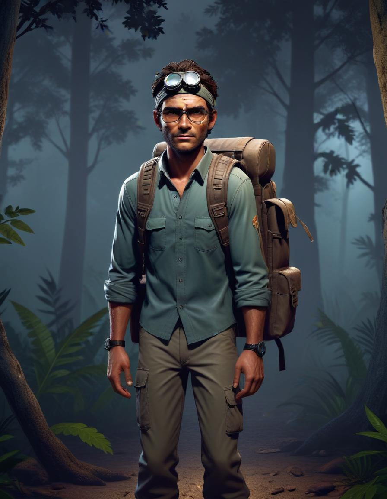

Game ini bercerita tentang sekelompok orang yang terjebak disebuah desa tua tak berpenghuni, ada empat orang yang mencoba memperbaiki mobil mereka untuk keluar dari desa yang dihuni oleh monster menyeramkan. Pilih salah satu sisi dan masuklah ke dunia multiplayer yang penuh ketegangan dan horror. Pemain bermain dalam tampilan third-person. Tujuan Survivors dalam setiap permainan adalah untuk memperbaiki mobil mereka yang rusak untuk melarikan diri dari desa menyeramkan ini tanpa tertangkap oleh monster. Tujuan monster untuk menangkap seluruh survivor dan mencegah mereka kabur dari desa.
Genre
Multiplayer
Survival Horror
Online Co-Op
Hide & Seek
Third Person
Mature
Action
Stealth
Elemen Game
üëæ Monster : menghindari monster yang juga merupakan player dengan strategi dan kerja sama tim.
ü™ô Resource : mengumpulkan komponen-komponen mobil yang rusak seperti ban, accu, radiator, dan lain sebagainya sesuai dengan kerusakannya.
ü™õ Repair : memperbaiki mobil dengan komponen yang ditemukan.
üõ°Ô∏è Defend : menggunakan alat sederhana untuk melindungi diri atau mengalihkan perhatian monster.
⚔️ Hunt : memburu player survivor yang bersembunyi.
üó£Ô∏è Interaction : berinteraksi dengan monster NPC untuk bantuan navigasi.
ü™§ Trap : penggunaan jebakan untuk menyerang survivor.
Pemain
Jumlah Pemain : 5 (1 Monster, 4 Survivor dan beberapa Monster npc)
Mode : Multiplayer online asimetris dengan elemen co-op untuk survivor.
Peran Pemain :
Monster Pemburu (Dreadhorn) : Serang Survivor
Ciri-Ciri Monster : Berbadan besar, memiliki mata berwarna merah, gigi bertaring, memiliki 2 tanduk seperti rusa, kuku tajam dan bulu yang lebat.
Survivor : Mencari komponen mobil, bekerja sama, menyelamatkan rekan, serang monster, melarikan diri dari pemburu.
Ciri-Ciri Survivor :
Survivor 1 (Glint) : Seorang Pria yang memiliki skill dapat membuat benda yang dicari terlihat/transparan, Pendek, Kurus, memakai kemeja dan celana cargo, membawa tas ransel, berkacamata, memakai jam dan headlamp
Survivor 2 (Sam) : Seorang Pria yang memiliki skill pendengaran yang tajam, Tinggi, Berbadan besar, memakai kemeja yang dimasukkan ke dalam celana cargo, memakai ikat pinggang, membawa tas ransel, memakai sarung tangan, sepatu boots hitam, headlamp, serta 2 tas pinggang.
Survivor 3 (Helen) : Seorang wanita yang memiliki skill dapat mengobati teman dengan cepat, Pendek, Kurus, Rambut di kepang 2, memakai kemeja yang dimasukkan ke dalam celana cargo, memakai ikat pinggang, membawa tas ransel, memakai jam tangan, membawa alat dan memakai headlamp
Survivor 4 (Viper) : Seorang wanita yang memiliki skill lari dengan cepat, Tinggi, Kurus, Rambut di ikat, memakai topi, memakai kemeja yang dimasukkan ke dalam celana cargo, memakai ikat pinggang, membawa tas ransel dan memakai jam tangan.
Monster NPC (mini zombie): Membantu monster untuk melacak survivor tetapi memiliki pergerakan yang sangat lambat.
Ciri-Ciri Monster NPC : Seorang pria dengan tubuh tinggal tulang dan baju yang rusak berdarah-darah, memakai celana ripped jeans, berwajah seram dan pucat bermata merah seperti zombie.
Spesifikasi Teknis
Bentuk Teknis
Game ini menggunakan grafik 3D untuk visualisasi, menciptakan pengalaman bermain yang menarik dan menegangkan dengan struktur lingkungan yang detail. Pada game ini lingkungan digambarkan berada di sebuah desa yang terletak di tengah hutan, di dalamnya terdapat beberapa rumah, gudang/bengkel untuk mencari perlengkapan serta beberapa mobil rusak.
Tampilan
Tampilan kamera adalah third-person perspective, memungkinkan pemain melihat karakter mereka sepenuhnya dan memberikan pandangan luas terhadap lingkungan sekitar.
Gameplay
Objective
üë§ Survivor : Memperbaiki Mobil yang rusak dengan mengumpulkan component dan Bertahan hidup dari serangan monster.
üëæ Monster Pemburu : Menghalangi Survivor agar tidak dapat keluar dari hutan.
Mekanika Permainan
Alur Permainan
Suatu hari, empat orang sahabat memutuskan untuk berpetualang dengan melakukan camping di luar kota. Perjalanan mereka berjalan lancar hingga mereka tiba di sebuah hutan yang sangat lebat dan gelap. Ketika tengah melintasi jalanan yang sepi, pengemudi mendadak membanting setirnya karena melihat sosok hitam yang bergerak sangat cepat di pinggir jalan, menyebabkan dirinya terkejut. Tak mampu mengendalikan mobil, mereka terjatuh ke dalam jurang yang dalam, membuat kendaraan mereka rusak dikarenakan banyak bagian kendaraan yang rusak dan hilang.
Di sinilah tantangan hidup mereka dimulai. Keempat survivor kini terperangkap di desa terbengkalai yang sepi, jauh dari peradaban. Tanpa pilihan lain, mereka harus bertahan hidup di tengah hutan yang mencekam, di mana mereka tidak hanya harus menghadapi kondisi alam yang keras, tetapi juga makhluk mengerikan yang berburu mereka—monster yang tak tampak, namun siap menyerang kapan saja.
Untuk bertahan hidup, para survivor harus mencari berbagai komponen yang tersebar di sekitar desa yang ditinggalkan, yang dulu merupakan rumah bagi orang-orang yang kini hilang. Hanya dengan menemukan dan mengumpulkan bagian-bagian yang diperlukan, mereka bisa memperbaiki mobil mereka dan mencoba melarikan diri dari desa tersebut. Namun, mereka harus berhati-hati, karena para pemburu (pemain) yang memainkan monster selalu mengintai, siap untuk menangkap atau mengalahkan mereka sebelum mereka sempat melarikan diri.
Bertahan hidup bukanlah hal yang mudah. Keputusan dan kerja sama antar pemain akan menjadi kunci untuk keluar dari desa yang dipenuhi bahaya ini.
kontrol pemain
Movement : gunakan key “ W “ untuk maju, “ S “ untuk mundur, “ A “ untuk begerak ke kiri, dan “ D “ untuk bergerak ke kanan.
View : player bisa menggerakkan view menggunakan mouse.
Melompat : gunakan key “spasi”
Interaksi : gunakan key “E”
Heal (Survivor only)
Revive (Survivor only)
Melepas trap (Survivor only)
Menyelamatkan team mate (Survivor only)
Mengambil barang (Survivor only)
Memperbaiki mobil (Survivor only)
Mengikat survivor yang telah knockdown (Monster only)
Mengambil trap yang telah dipasang (Monster only)
Menyerang (monster only) : menekan Klik Kiri Mouse (LMB)
Control power senter (survivor only) : gunakan key “F”
Setiap pemain memulai permainan dengan HP 100%. Ketika HP pemain mencapai 0%, pemain akan knockdown dan tidak bisa bergerak atau bertindak sampai ada pemain lain yang membantu.
Mekanik Healing:
Semua pemain bisa menyembuhkan pemain lain, tetapi mereka tidak bisa menyembuhkan diri sendiri. Proses penyembuhan ini lambat, sehingga membutuhkan waktu untuk mengembalikan HP pemain yang disembuhkan.
Karakter Helen memiliki kemampuan untuk melakukan healing pada pemain lain dengan lebih cepat. Ia bisa menyembuhkan pemain dengan kecepatan yang jauh lebih efisien dibandingkan pemain lainnya. Namun, healing karakter Helen juga memiliki cooldown dan hanya bisa digunakan kembali setelah 45 detik sama seperti pemain survivor lainnya.
Mekanik Headlamp dan Trap
Mekanik Headlamp:
Pemain dapat menggunakan headlamp untuk menyetrun monster. Monster akan terstun selama 1,5 detik, namun setelah itu, monster akan kebal terhadap cahaya selama 15 detik, karena monster dapat beradaptasi. Setelah 15 detik, monster akan kembali rentan terhadap cahaya.
Mekanik Trap:
Bear trap dapat dipasang oleh monster di peta, dengan batas maksimal 3 buah trap yang terpasang dalam satu waktu. Untuk memasang trap lagi, monster harus menunggu selama 20 detik cooldown.
Ketika seorang pemain terkena trap, pemain akan langsung terstun dan tidak bisa bergerak sama sekali. Setelah berhasil melepaskan diri dalam waktu 10 detik, pemain akan terkena efek pincang (slow) dan bergerak dengan kecepatan terbatas.
Selain itu, ketika pemain terkena trap, baik monster maupun survivor yang berada di sekitar area akan menerima notifikasi visual di layar. Notifikasi ini akan muncul di pojok layar (seperti di game FPS), yang menunjukkan arah di mana pemain yang terkena trap berada. Jika pemain yang terkena trap berada di sisi kiri peta, maka notifikasi akan muncul di pojok kiri layar. Sebaliknya, jika di sisi kanan, notifikasi akan muncul di pojok kanan layar. Notifikasi ini memberikan informasi bagi semua pemain tentang lokasi pemain yang terperangkap, membantu mereka untuk merencanakan aksi selanjutnya.
Mekanik Menyerang Monster
Monster akan menyerang dengan cakarnya dengan cooldown 5 detik, setelah menyerang monster akan terkena stun (tidak bisa bergerak kemana-mana) selama 2 detik tepat setelah menyerang.
Mekanik Pengumpulan Komponen
Pemain Survivor mengumpulkan berbagai resource komponen seperti ban, aki, baut, radiator, shock breaker, lamp, exhaust, hingga bensin. setiap pemain akan menemukan 1 persatu dan memasang nya pada mobil mereka agar dapat keluar dari desa itu.
Progression and Levelling
level player akan bertambah seiring banyaknya player menyelesaikan permainan. level berguna untuk balancing matchmacking agar seimbang.
Tantangan dan Rintangan
Time : survivor dan monster akan menerima tantangan yang sama yaitu waktu 10 menit selama pertandingan.
dikejar monster : survivor selama pertandingan harus berlari dan bersembunyi dari kejaran monster yang bersiap menangkap mereka sepanjang permainan.
dikejar monster npc : monster npc akan disummon setiap 1 menit sekali berjalan mengarah ke survivor dan akan menghilang dalam 30 detik masuk ke dalam tanah.
Fitur Utama
Fitur Utama
berikut adalah fitur utama:
Mekanik Bertahan Hidup dan Kerja Sama Tim
Survivor
Game ini menggabungkan elemen bertahan hidup yang menegangkan dengan kebutuhan untuk bekerja sama. Pemain yang berperan sebagai.
Harus saling membantu untuk mengumpulkan komponen, memperbaiki mobil, dan bertahan hidup di tengah ancaman monster yang mengintai. Setiap keputusan dan aksi kolektif sangat menentukan kelangsungan hidup tim, sehingga kerjasama yang solid antara pemain sangat penting untuk melarikan diri dari desa terbengkalai tersebut.
Interaksi dengan Lingkungan yang Intuitif
Game ini memberi pemain banyak kebebasan untuk berinteraksi dengan lingkungan, seperti memperbaiki mobil, mengambil barang, menggunakan headlamp, atau memasang trap. Semua ini dilakukan dengan tombol interaksi yang sederhana dan intuitif (misalnya, menggunakan tombol "E" untuk interaksi), memungkinkan pemain untuk fokus pada taktik dan keputusan strategis. Interaksi ini memberi pemain rasa keterlibatan dan membuat dunia game terasa hidup.
Visual dan Atmosfer yang Mencekam
Dengan latar belakang desa terbengkalai yang gelap dan hutan yang lebat, visual game ini menciptakan atmosfer yang mencekam dan memikat. Pencahayaan dinamis, terutama dengan penggunaan headlamp untuk men-strun monster, menambah ketegangan visual. Lingkungan yang penuh detail dan efek suara yang menakutkan memberikan pengalaman imersif yang memperkuat nuansa survival horror dalam permainan.
Fitur Khusus
Setiap karakter memiliki kelebihannya masing-masing yaitu :
scan tembus pandang x-ray agar mudah menemukan komponen.
pendengaran yang tajam sehingga memudah kan mendengarkan step musuh.
bisa mengobati rekan lain dengan sangat cepat.
memiliki skill lari dengan cepat dibandingkan dengan rekan lain.
Dokumen Desain
Cara Kerja Objek dalam Game :
Survivor : Karakter memiliki kesehatan terbatas dan keterampilan unik. Mereka dapat berinteraksi dengan lingkungan untuk mencari sumber daya dan memperbaiki mobil.
Monster Pemburu : Karakter kuat dengan kemampuan mendeteksi dan menyerang survivor
Monster NPC : Bergerak lambat tetapi dapat membantu melacak survivor
Mobil : Objek utama yang harus diperbaiki oleh survivor untuk memenangkan permainan.
Komponen Mobil : Tersebar di berbagai lokasi gudang/bengkel, memerlukan strategi dan kerja sama untuk menemukannya
Panduan Desain
Batasan Kreatif :
Lingkungan harus cukup gelap untuk menciptakan suasana tegang, namun tetap memungkinkan pemain melihat dan berinteraksi dengan objek.
Durasi satu sesi permainan maksimal 10 menit untuk mempertahankan ketegangan dan mencegah kebosanan. Jika lebih dari 10 menit maka game akan otomatis selesai dan survivor dianggap kalah karena tidak dapat menyelesaikan permainan.
Monster NPC harus menjadi ancaman tambahan, namun tidak boleh mengambil alih peran monster utama dalam memburu survivor
Desain monster harus menyeramkan namun tidak menjijikkan agar dapat menarik pemain dengan berbagai tingkat toleransi terhadap unsur-unsur horor.
Sumber daya/perlengkapan yang dibutuhkan untuk memperbaiki mobil harus relatif sulit didapatkan, agar membuat pemain menjadi tertantang, tetapi juga tidak langka agar pemain tidak frustasi.
Keterampilan dan kemampuan harus seimbang sehingga tidak ada peran yang dominan, baik survivor maupun monster.
Tidak ada konten sensitif yang dapat menyinggung kelompok tertentu, seperti elemen cerita yang kontroversial.
Tujuan Desain :
Desain lingkungan bertujuan menciptakan kondisi yang mencekam dengan pencahayaan minim dan efek suara menyeramkan.
Elemen visual dan suara memperkuat tema horor dan menciptakan suasana tegang.
Gameplay dibuat agar menciptakan keseruan antara survivor dan monster, dengan penekanan pada kerja sama tim dan strategi.
Definisi Desain Game
Cara Pemain Menang atau Kalah
Survivor Pemain mencari dan mengumpulkan komponen mobil yang dibutuhkan. Memperbaiki mobil jika komponen telah terkumpulkan kemudian melalikan diri dari desa. Minimal ada 1 orang yang mampu melarikan diri sebelum waktu yang ditentukan (kabut semakin tebal)
Pemburu Pemain berhasil menangkap dan membunuh semua survivor secara permanen sebelum menyelesaikan misi memperbaiki mobil
Fokus Utama Gameplay
Survivor
Kerja sama tim : strategi untuk membagi tugas, menyelamatkan teman, dan melarikan diri.
Manajemen risiko : menyeimbangkan antara mencari komponen dan menjaga keselamatan dari pemburu.
Ketegangan tinggi : atmosfer horor dan perasaan terancam yang konstan untuk menciptakan rasa takut.
Pemburu
Dominasi : memiliki kendali penuh untuk menciptakan ancaman melalui jebakan atau serangan langsung. Strategi berburu : memanfaatkan suara dan jebakan untuk mempermainkan survivor.
Diagram Alur Game
Menu Utama : Pilih peran ‚Üí Pilih role ‚Üí Mulai permainan.
Gameplay :
Survivor : Eksplorasi ‚Üí Cari komponen ‚Üí Hindari monster ‚Üí Perbaiki mobil ‚Üí Kabur.
Monster : Cari survivor ‚Üí Serang survivor ‚Üí Membunuh survivor.
Kondisi Akhir : Survivor berhasil kabur atau semua survivor terbunuh.
Definisi Pemain
Properti Pemain
Survivor :
Kesehatan : Menurun saat di serang monster
Kemampuan : Membantu mencari, mendengar, mengobati atau melarikan diri.
Monster :
Kekuatan : Menyerang survivor
Kemampuan : Mendeteksi survivor dan membunuh survivor
Hadiah Pemain
Bagi pemain yang berhasil menyelesaikan permainan maka akan mendapatkan experience point dan score result dari performa pemain.
Bagi pemain yang menang akan mendapatkan Point Rank.
Bagi pemain yang kalah maka Point Rank akan berkurang.


{kind=link}
{kind=link}
{kind=link}
{kind=link}
{kind=link}
{kind=link}
{kind=link}
{kind=link}
{kind=link}
{kind=link}
{kind=link}

{kind=link}